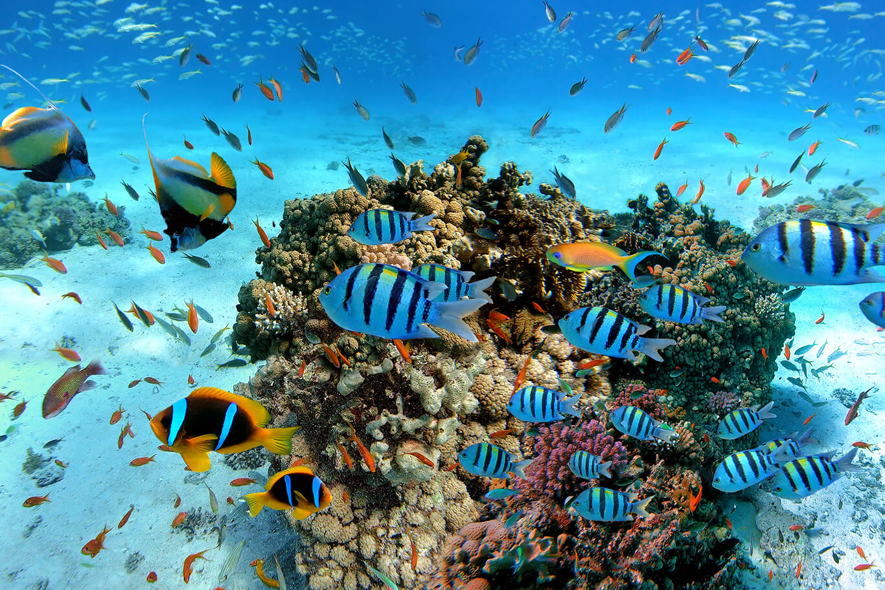
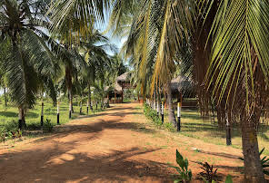
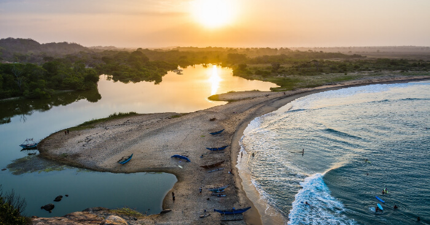
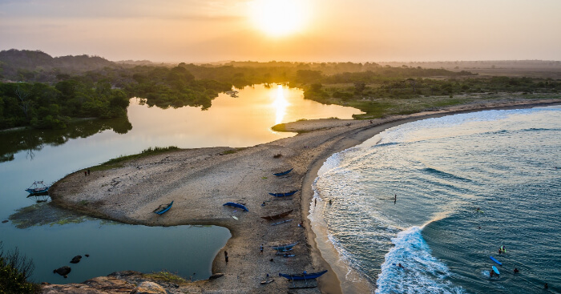
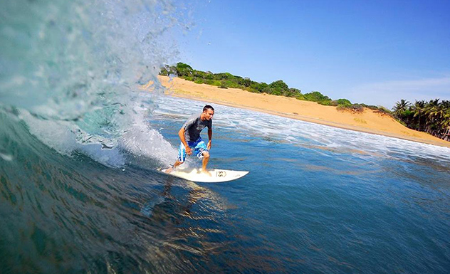

Sri Lankan Beaches
Visit, Enjoy and Relax with the Serene coasts
1.Nilaveli Beach

Nilaveli Beach (Trincomalee)
Nilaveli Beach is famous for it's beautiful and peaceful shore, the beach is very clean and soothing to have a nice relaxing day will enjoying the sun. It is visited by many tourists and locals alike for family holidays or for a fun site seeing location.
It is also famous for the nearby beach resort and being close to the coastal town. The Pigeon island is the other main reason Nilaveli beach is famous for being near the island attracts many tourists along the way to the island.
Pigeon Island
Pigeon Island Snorkling
Things to do while visiting Nilaveli
- 1Enjoy Snorkling or Diving experience in Pigeon Island
- 2Visit and explore Fort Fedrick
- 3Visit and enjoy the Maritime Museum
- 4Visit the Marble Beach and relax
- 5Whale watching tours
Nilaveli Beach Hotel
A beautiful hotel with a peaceful pool right next to the beach resturant. Situated directly on the Nilaveli beach close to the pigeon island and a hotspot for travelers looking to spend the their holiday in a Grand manner.
2.Kalkudah Beach
Kalkudah (Pasikuda Bay)
Located on the Pasikuda Bay a mile-long beach for you to relax and swim in peace in clean and soothing waters. The water is shallow and unlike many beaches the Kalkudah beach offers a gentle and soothing waves because its protected by a offshore reef.
This area is less populated so for those who want a peaceful, relaxing and a secluded getaway the Kalkudah beach will not dissapoint.
Serene getaway Kalkudah Beach
The Coconut Cultural Park
Things to do while visiting Kalkudah
- 1Visit the Coconut Cultural Park
- 2Water sports
- 3Visit the Sri Munai Murukan Kovil Temple
- 4Visit the fishing village at the beach
- 5Visit the Batticaloa Dutch Fort (30-min drive)
Amaya Beach Pasikuda
Enjoy the beautiful alluring and peaceful Amaya Beach Pasikuda. Surrounded by the beautiful shores of the Pasikuda bay. Located right next to the beach and also having a outdoor pool the resort offers many deals to make your stay the best.
3.Arugam Bay
 

Arugam Bay
Arugam Bay is dramatically beautiful, with bright white sand and deep blue water gradually becoming green the closer you get to the shore. With that beauty comes some of the best surf breaks in Sri Lanka, and the beach is known as an international surf destination.
This reputation brings many visitors but also means the area has a good tourist infrastructure and is easy to access. The curving beach feels a bit like a Hawaiian beach.
Elephant Rock Arugam Bay
Surfing experience Arugam bay
Things to do while visiting Arugam Bay
- 1Climb Elephant Rock
- 2Visit the Muhudu Maha Viharaya
- 3Experience Surfing waves at the beach
- 4Lagoon safari
- 5Visit local fishermen
Arugambay Roccos
Arugambay Roccos located 1-min away from the Arugam Bay beach this beautiful hotel rests. Enjoy the best accomadation and relax with one of the most serene coasts nearby.